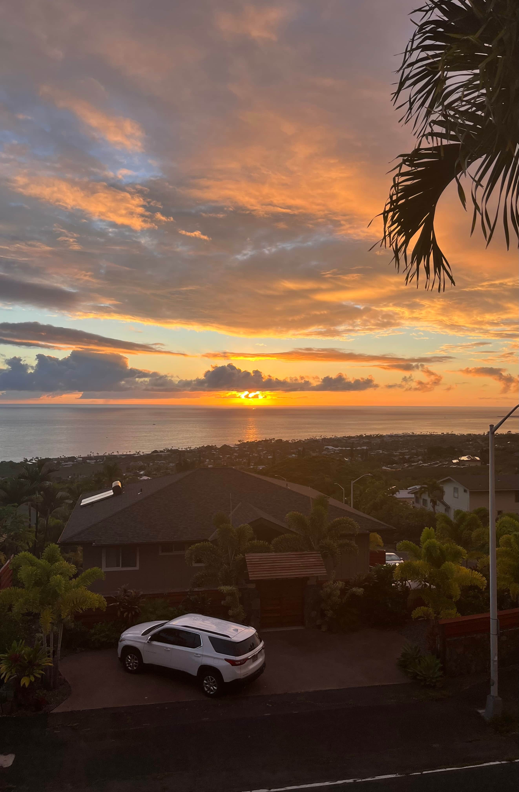

Diving
Learn the basics of safe diving practices, equipment, and ocean awareness for beginners.
Saltwater Pursuits introduces beginners to ocean activities like diving, fishing, and bodyboarding while promoting safety, confidence, and respect for the ocean.

Learn the basics of safe diving practices, equipment, and ocean awareness for beginners.
Explore fishing techniques, gear recommendations, and responsible fishing practices.
Discover beginner bodyboarding tips, wave safety, and how to choose the right board.
Understanding ocean conditions, currents, weather, and local safety guidelines is essential before participating in any ocean activity. You want to always make sure that you are very good and understanding these things because one day it might save you or someone else's life.
Additional tutorials, local guides, equipment reviews, and ocean safety resources will continue to be added throughout this project.